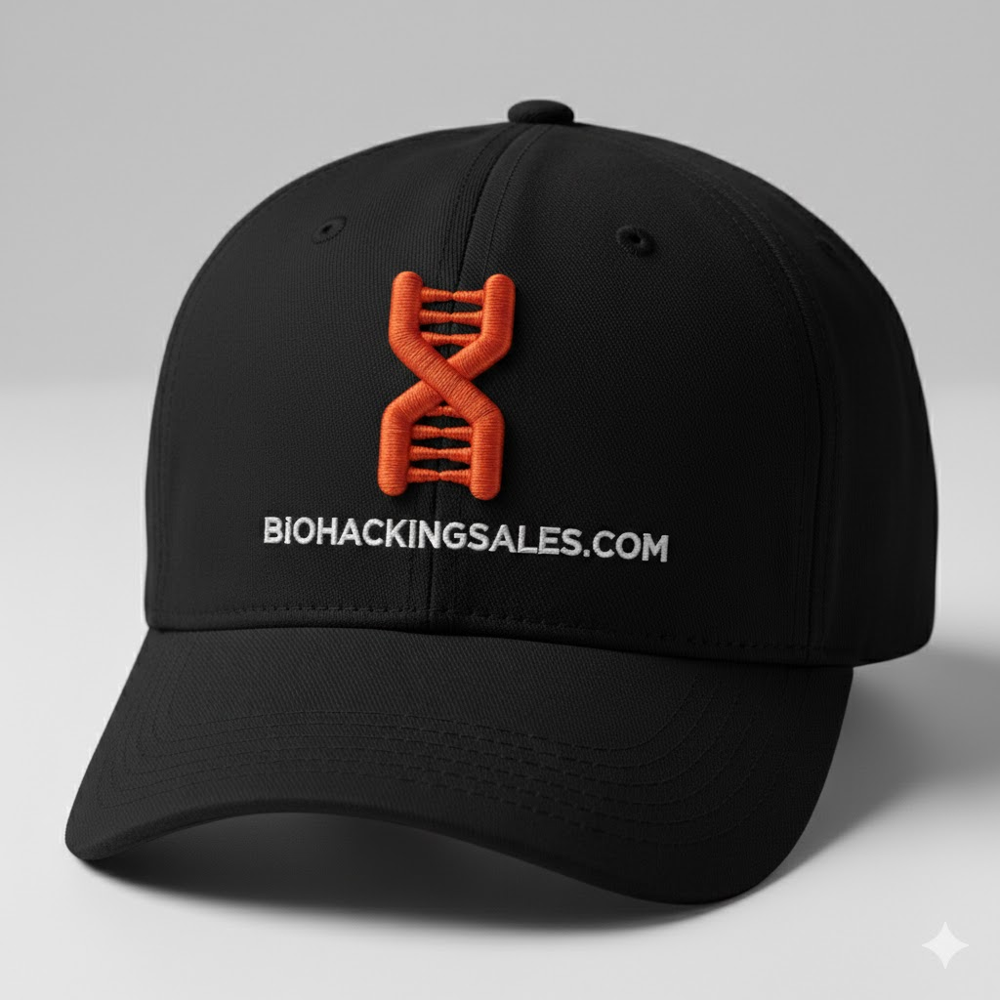

Unpredictable Revenue Ends Here
Turn Outbound Sales Lambs
into Lions.
Stop paying the $100,000 Hesitation Tax. We use applied neuroscience to regulate the biology of execution.

Unpredictable Revenue Ends Here
Stop paying the $100,000 Hesitation Tax. We use applied neuroscience to regulate the biology of execution.
When you regulate the biology of a sales floor, the shift is immediate. This isn't a slow build; it's a hardware reboot.
"The logic is simple: More self-regulation equals more contentment with the daily sales grind Contented reps make more dials. More dials create more opportunities. More opportunities lead to more closes. More closes put more commission in your reps' pockets—and that is the only way your revenue targets are hit."
Systems Architect & Pioneer
Why do two reps with the same training perform wildly differently? One becomes a lion; the other remains a lamb.
Having worked with giants like American Express, Yelp, and Constant Contact, and helping Siemplify toward its Google acquisition, I've seen every sales script imaginable. None of them solve the "biology" problem.
My background as an Addiction Counselor allowed me to be the first to solve the Inconsistency Crisis at a neurological level. I don't just teach sales; I install the hardware to win.
The Development of 80XPower15
The 80XPower15 framework was developed when my life collapsed. Two months into a role at a Fortune 500 tech leader, my marriage ended, and my kids moved out of the country.
Isolated on a remote homestead—broke and alone—I was still expected to hit quota. I noticed that when my internal state was in distress, I triggered biological resistance in my prospects before I finished my first sentence. It was also hard to make a lot of consistent dials, and lead the business owner to a strong close, using frank speech and deep discovery questions.
Your reps aren't just fighting prospects; they are fighting their own biology. When a rep has a bad night, a fight with a spouse, or financial stress, or havign a bad sales week their unregulated nervous system kills the deal before the pitch even starts. They don't push when they should, they don't speak frankly and confidently with business owners, and it is also very hard for them to make a lot of dials and hit KPIs.
I realized that if I could hit quota while my life was in ruins, I could build a system that makes your team "unshakable." 80XPower15 is that system—it ensures that human volatility never dictates your revenue targets again.
Neural Pathway of the 'Biological No'
When a rep’s Amygdala fires, their biology "leaks" anxiety. This instantly triggers the prospect's Insular Cortex—the brain's seat of disgust and avoidance.
The prospect’s survival brain forces a rejection reflex before they ever logically process your value prop.
80XPower15 installs a Neurological Firewall. By regulating the ACC and silencing the Insula, we turn biological resistance into a clear path for the close.
Neuro-triggers move reps from 'resting' to 'hunting' in under 5 minutes.
Clinical addiction protocols to seal "Dopamine Leaks."
Regulating the Limbic System to stop the prospect's rejection reflex.
Biological resets that maintain energy levels through the dip.

By eliminating the "Hesitation Tax," we increase top-of-funnel volume. Most teams see a 40% increase in dial density within 72 hours, leading to a more stable pipeline.
No. 80XPower15 is the infrastructure that allows your reps to execute Sandler, Challenger, or SPIN without their biology getting in the way.
The protocols take less than 5 minutes of a rep's day and require zero change to your current CRM or tech stack.